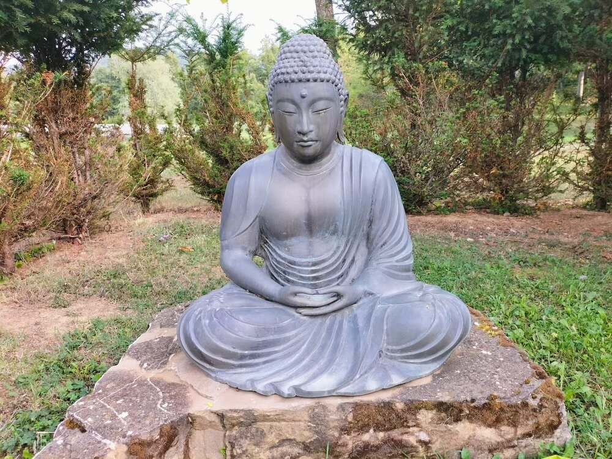
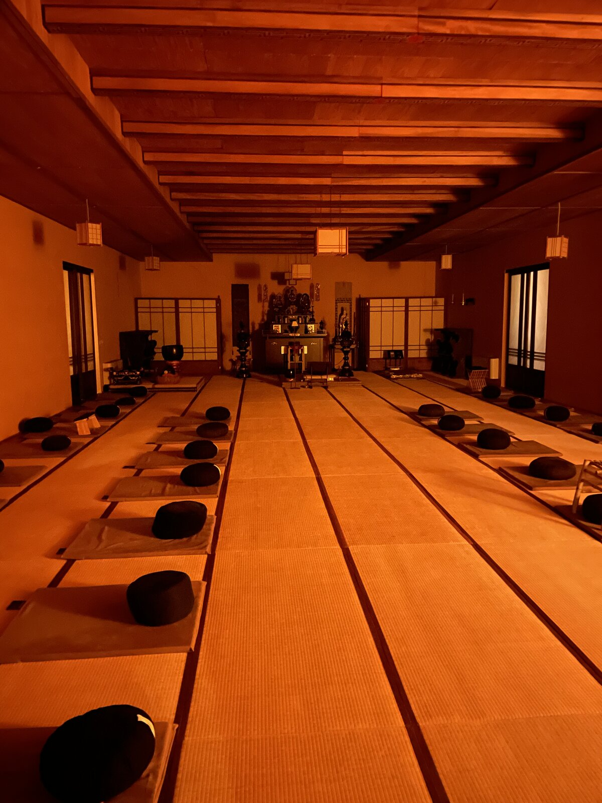
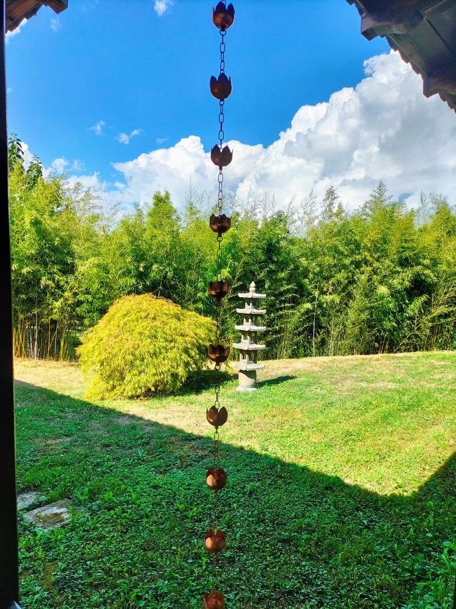
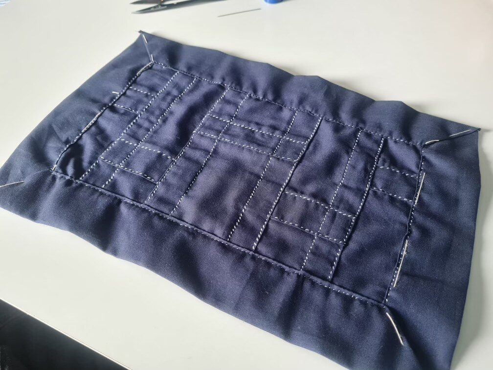
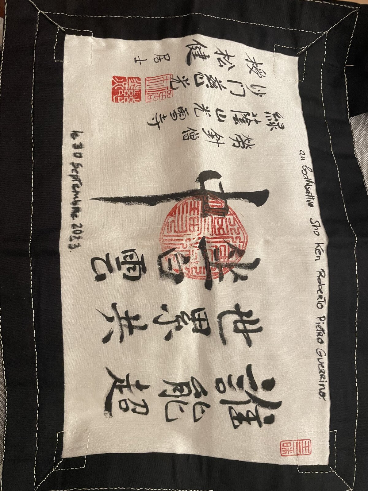
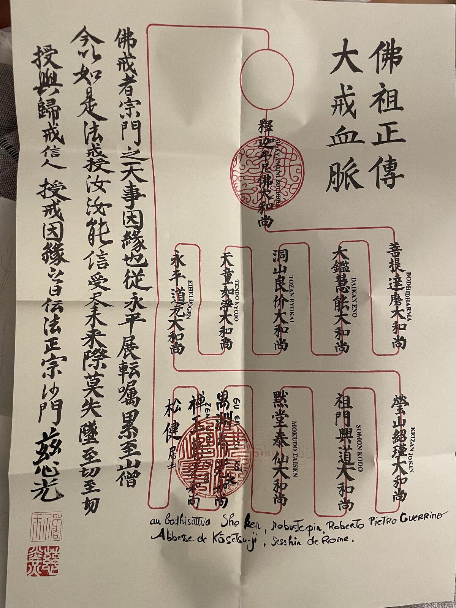
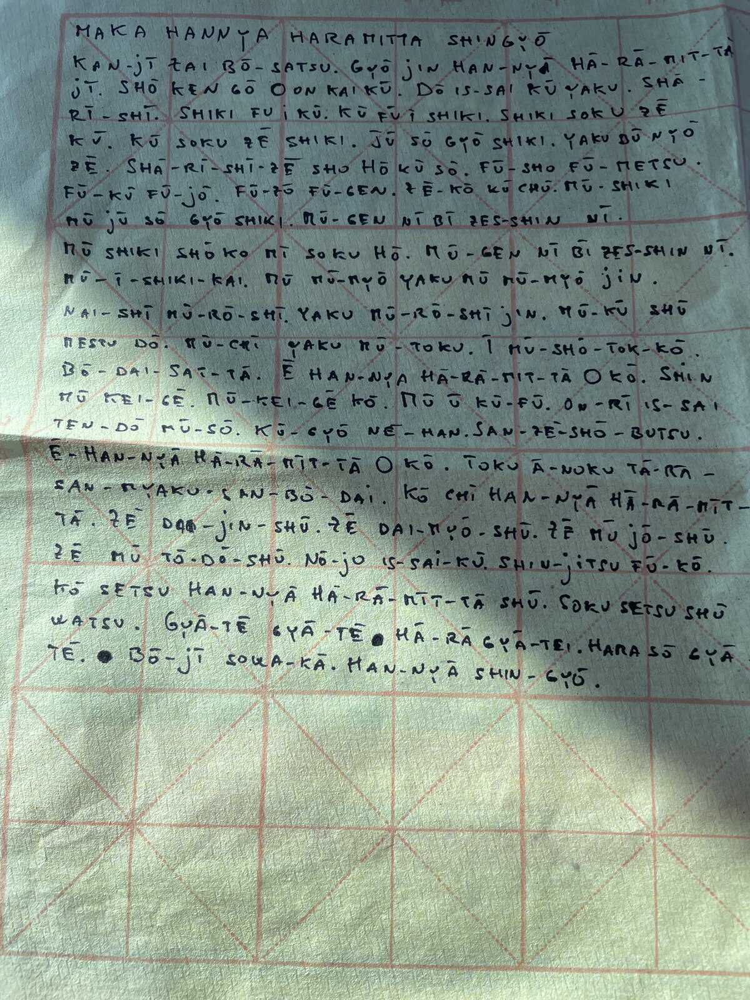

Buddhism was the hidden centre of his life: a way of being in the world able to accept what comes without struggling in vain.
He did not display it. It was a silent discipline of study, of retreats and of everyday gestures, running through his whole life.

His practice had begun in Tibetan Buddhism, at the Lama Tzong Khapa Institute in Pomaia, among the stupa and the prayer wheel.
There he had taken the dharma name Konchog and attended retreats, where he celebrated Losar, the Tibetan New Year.
At one Tibetan New Year, moved, he told the Lama about his ailing mother; the Lama held his hands with infinite gentleness: «I’ll pray for you. Everything will be ok. I’ll meet you.» “Such balm,” he wrote.
Later he turned to Sōtō Zen, in the lineage of Taisen Deshimaru — the master who brought this Zen to Europe, heir to Kōdō Sawaki.
A practice of the body and of silence, made of zazen, posture and breath: simply to sit, and let things be.


On 30 September 2023, during a sesshin in Rome, he received the bodhisattva ordination. He was given the name Sho Ken.
As that tradition asks, he had sewn his own kesa, the practitioner's robe, by hand: stitch by stitch, the cloth in small fields, like rice paddies.



"As a Buddhist, I accept."Roberto
He said it with disarming simplicity, even before the hardest trials. In that surrender there was no resignation, but a form of freedom.
The book dearest to him was Marie de Hennezel’s «Intimate Death» (La morte amica). Its idea, simple and radical, was his own too: death not as a taboo or as pure dread, but as a natural part of life — one that, once accepted, gives greater value and intensity to the time that remains. De Hennezel writes about accompanying the dying, about listening, about love for life: the opposite of the way our age keeps death at arm’s length. In those pages Roberto found his own clear acceptance.
The name he received, Sho Ken (松健), means “robust pine”: the pine that stays green even in winter, an image of longevity and quiet endurance.
Konchog and Sho Ken, the Tibetan way and Zen: two roads, and a single peace with himself.
Among his practices was shakyō, the hand-copying of sutras. He had transcribed the Heart Sutra (Hannya Shingyō) on fine Japanese paper, word by word.
A gesture of concentration and care, offered as a wish for healing: not of the body, but of the mind — the kind that lets one forget the body's ills.
